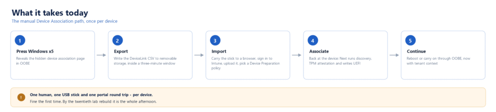
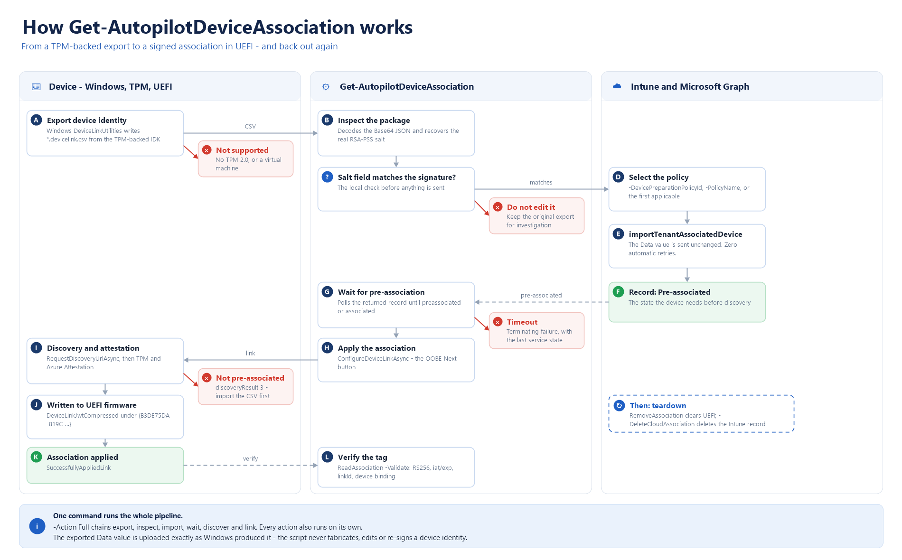
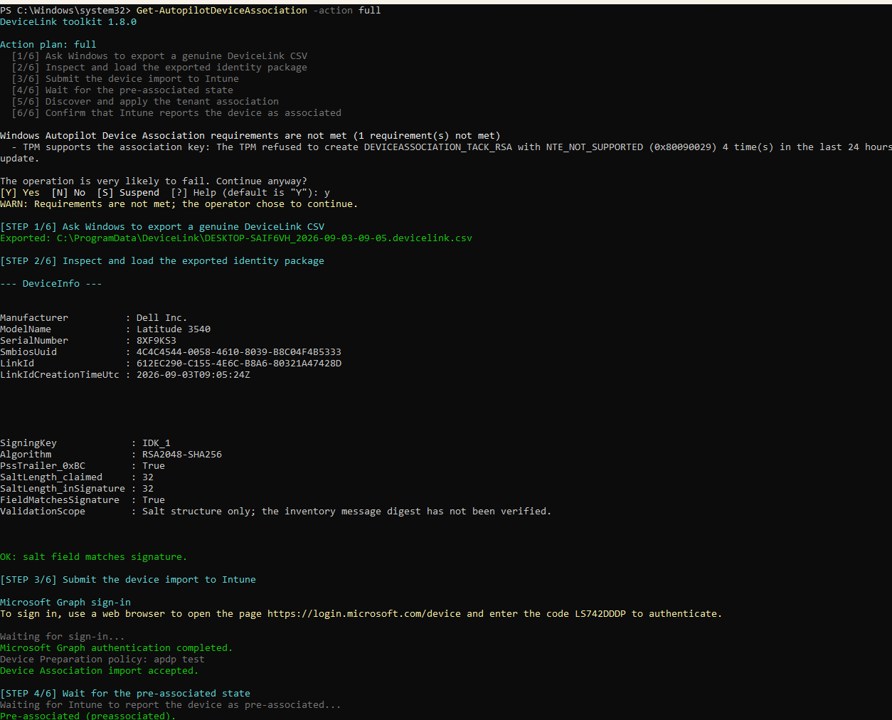
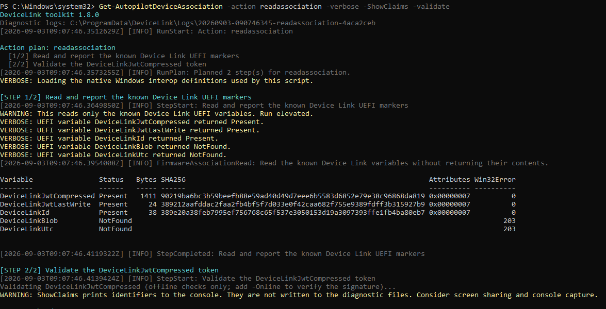
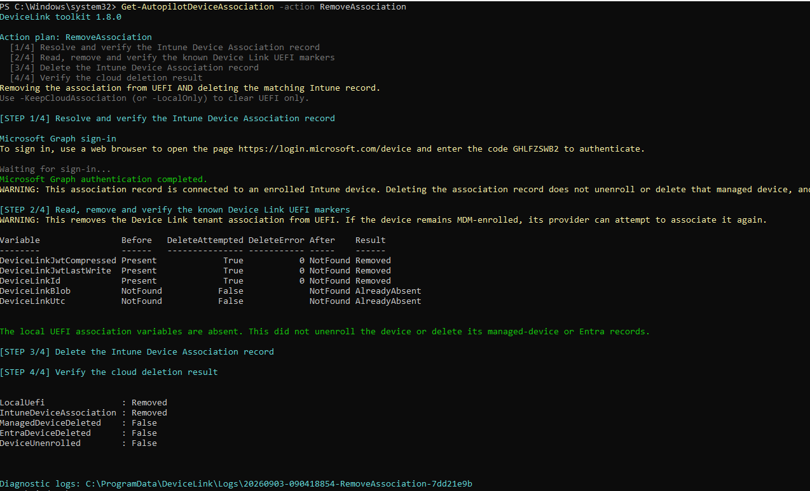

Windows Autopilot Device Association lets a brand-new laptop work out which tenant it belongs to before anyone signs in, which is genuinely useful, right up to the moment you realise there is no manufacturer doing that registration for you. This post is about why that gap exists, what filling it by hand actually costs you, and Get-AutopilotDeviceAssociation, the PowerShell script I wrote so you do not have to.
A new laptop is not Associated
Out of the box, a device has no idea who you are. It does not know your company, your naming rules, or which setup screens you would rather it skipped. With classic Autopilot you fixed that in advance: register the hardware, and the moment the machine reached the network it recognised you.
Autopilot device preparation removed that requirement, and honestly that was a relief. No more chasing hardware hashes before anyone could unbox anything. But it came with a catch that does not get talked about much: the device stays anonymous until somebody signs in. Everything you might want to happen early – the right name, the right screens, the right settings – waits for a user to show up.
Which is exactly what Device Association is for
Device Association gives the machine a way to prove where it belongs before anyone logs in. The device proves itself, the service hands back a signed answer, and Windows tucks that answer away in firmware. From the next boot onwards the setup screens already know whose laptop this is. If you want the long version, I walked the whole flow in the previous post.
That is the whole point, and it is a good one. Then you go and use it.
What it takes

Every step needs a person standing there. Press the Windows key five times to reach a page that is hidden on purpose. Export a file to a USB stick, with about three minutes before it gives up on you. Carry the stick to a machine with a browser, sign in, upload it, pick a policy. Walk back to the device. Press Next. Carry on. Once, that is educational. Twice is fine. On a bench of twenty machines it is your afternoon.
So you are the OEM now
Here is the bit that catches people out. In the classic Autopilot (APv1) there is a manufacturer quietly doing this for you (or your overpaid engineer). The hardware gets registered before the box is even sealed, and the laptop turns up already knowing where it belongs. It is such a normal part of the story that you stop noticing it is happening at all.
Device Association has no such manufacturer. There is no factory step. There is no pre-associated hardware to order. Nobody upstream is doing the boring part.
So you are the OEM now. Your factory is a desk, your assembly line is a USB stick, and your production run is however many laptops will fit on it. Congratulations on the new role. There is no lanyard.
So we needed something else
Autopilot v1 solved this years ago, and not with a portal. You ran Get-WindowsAutopilotInfo -Online on the device and that was it. Nobody has hand-carried a hardware hash since. It was never the only supported route – it is just the one everybody actually used, because it turned a chore into a line in a script.
Device Association turned up without one. Same problem, no tool. And the old one is no help here: it collects a different thing and sends it somewhere different.
So I wrote the missing one. It is called Get-AutopilotDeviceAssociation, which is not the most imaginative name in the world – but that is rather the point. If you already know what Get-WindowsAutopilotInfo does for classic Autopilot, you already know what this does for Device Association.
Where to get it
It lives on the PowerShell Gallery (and github), so there is nothing to download by hand and nothing to unblock. From an elevated 64-bit PowerShell session:
Install-Script -Name Get-AutopilotDeviceAssociation
That puts it on your PATH, so from then on you just type the command. When I ship a new version, Update-Script Get-AutopilotDeviceAssociation picks it up. The source, the issue tracker and the full parameter reference are on GitHub.

The same journey, in one command. If you want the details, it is all in the README. What used to be a USB stick and a round trip to the portal is now something you run on the device: from a task sequence, from a staging bench, or across twenty machines in a row without standing in front of any of them.
Associate, test, remove
There are really only three things you do with Get-AutopilotDeviceAssociation.
Associate it
Get-AutopilotDeviceAssociation -Action Full
Run that on the device. It gets the identity out of the machine, registers it in Intune against a Device Preparation policy, waits until Intune agrees the device is known, and then tells Windows to go and fetch its signed association. Everything the five manual steps did, without the five manual steps.

Test it
Get-AutopilotDeviceAssociation -Action ReadAssociation -Validate -Online
This one surprised me. The association does not last forever – it has an expiry date. So a device can look perfectly associated and quietly not be, and nothing was telling you which. This checks whether it is really there, whether it is still in date, and whether it actually belongs to this machine, and gives you the answer in one line.

Remove it
Get-AutopilotDeviceAssociation -Action RemoveAssociation -DeleteCloudAssociation
The half nobody had scripted. After a lab run you are left with something signed sitting in firmware and a record sitting in Intune, and no tidy way to clear either. This clears both, checking what is there before it touches anything, checking again afterwards, and only ever going near the things it knows about. Add WhatIf the first time if you would rather watch it think than watch it act.

Removing the association does not unenroll the device, and that is deliberate. That is a different job, and doing it by accident would be rude.
What is still missing
The factory. Everything above is a stand-in for a manufacturer step that does not exist yet. If Microsoft and the OEMs ever build the real thing, this becomes a lab tool and I will be delighted.
Running it unattended. By hand it is easy – you sign in and it goes. Unattended means credentials, and credentials in scripts are how people end up having a bad week. There is a safer option built in, and it is still the part of this I like least.
It is all preview. The interfaces underneath are beta. They will change, and this will have to change with them.